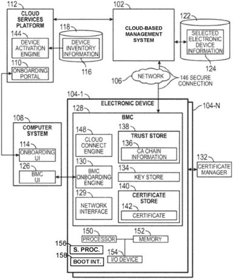
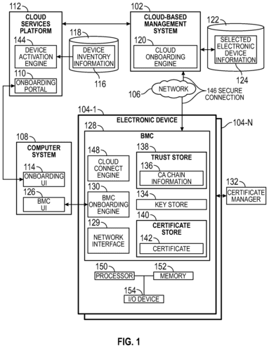
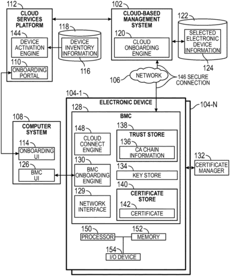
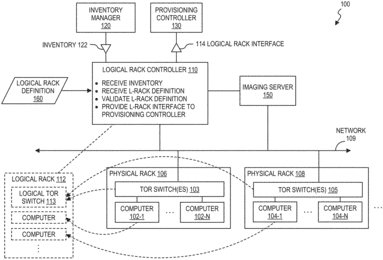
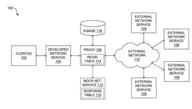

Blaine R Southam
HPE Fellow | Compute Cloud – Chief Technologist
Building the architecture behind more connected, manageable, and secure enterprise infrastructure.
Professional Experience
HPE Fellow
Appointed to HPE's top technical leadership rank, establishing corporate architectural direction, shaping cloud strategies, and guiding technical standards globally.
- Sets HPE-wide technical direction for secure, cloud-managed compute and server lifecycle management.
- Provides architectural governance across Compute, GreenLake, Hybrid Cloud, Storage, Networking, and security.
- Advances technical leadership through TCP boards, standards committees, mentorship, and cross-BU innovation.
Chief Technologist - Compute Cloud
Drives the overall architecture strategy for HPE's Compute Cloud organization and transitions enterprise compute management to modern, resilient cloud services.
- Leads the architecture for Compute Ops Management
- Redesigned orchestration to improve efficiency and scalability of cloud operations.
- Defines cloud-native, security-first standards for firmware, onboarding, AI-assisted operations, and third-party server management.
Senior Distinguished Technologist
Spearheaded compute cloud technology vision and cross-business unit technical alignment.
- Led the expansion of Compute Ops Management across ProLiant, Apollo, Alletra, and third-party servers.
- Directed production architecture for the COM secure gateway, integrations, onboarding, and Compute Copilot.
Distinguished Technologist & Strategist for Compute Ops Management
Defined foundational compute operations management strategy for cloud-native server operations.
- Assumed chief architectural ownership before Compute Ops Management reached initial public availability.
- Established GitHub, CI/CD, secure container, static-analysis, and vulnerability-scanning standards for the organization.
Chief Design Office - Distinguished Technologist
Worked directly within the Chief Design/CTO Office to enable HPE's corporate shift to an as-a-service operating model.
- Modernized Quake into a Kubernetes-based GreenLake service and created repeatable cloud-native deployment patterns.
- Designed the Multi-Rack Controller and replaced legacy PXE provisioning with HTTPS boot for SaaS-managed bare metal.
- Advanced MLOps/CaaS prototypes and early container-as-a-service capabilities for HPE engineering.
Granted U.S. Patents (10 Patents)
Ten granted United States patents spanning agentless attestation, cloud onboarding, logical rack controllers, data center resilience, and network services.
Agentless attestation as a service
Approaches for measuring server integrity without installing an agent on each monitored device.

View patent ↗Onboarding for remote management
Techniques for securely connecting electronic devices to a cloud-based management system.

View patent ↗Onboarding for cloud-based management
Securely onboarding devices to a cloud-based management system.

View patent ↗Logical rack controller
Methods for defining and validating logical racks drawn from physical computing infrastructure.

View patent ↗Systems and methods for collecting data regarding network service operation
Collecting information about messages directed to a network service.

View patent ↗Speaking & Industry Keynotes (23 Events across 11 Years)
Keynotes, technical sessions, and executive briefings across international forums including Tech Jam Vienna, HPE Discover, and Ambassador Summits.
Education
Let's Connect
Based in Northern Colorado. Always interested in discussing cloud architecture, mentoring engineering talent, or technical speaking engagements.